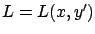
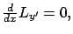
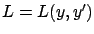
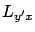
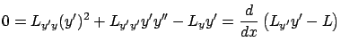
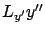
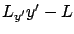
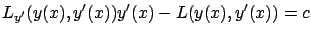

We know from the discussion given towards the end of Section 2.3.1--see the formula (2.19) in particular--that the Euler-Lagrange equation (2.18) is a second-order differential equation for  ; indeed, it can be written in more detail as
; indeed, it can be written in more detail as
SPECIAL CASE 1 (``no  "). This refers to the situation where the Lagrangian does not depend on
"). This refers to the situation where the Lagrangian does not depend on  , i.e.,
, i.e.,

. The Euler-Lagrange equation (2.18) becomes
which means that
The quantity  , evaluated along a given curve, is called
the momentum. This terminology will be justified in Section 2.4.
, evaluated along a given curve, is called
the momentum. This terminology will be justified in Section 2.4.
SPECIAL CASE 2 (``no  "). Suppose now that the Lagrangian does not depend on
"). Suppose now that the Lagrangian does not depend on  , i.e.,
, i.e.,

. In this case the partial derivative
vanishes from (2.24), and the Euler-Lagrange equation becomes
Multiplying both sides by

where the last equality is easily verified (the

terms cancel out). This means that
must remain constant. Thus, similarly to Case 1, extremals are described by the family of first-order differential equations

parameterized by
The quantity is called the Hamiltonian. Although its significance is not yet clear at this point, it will play a crucial role throughout the rest of the book.